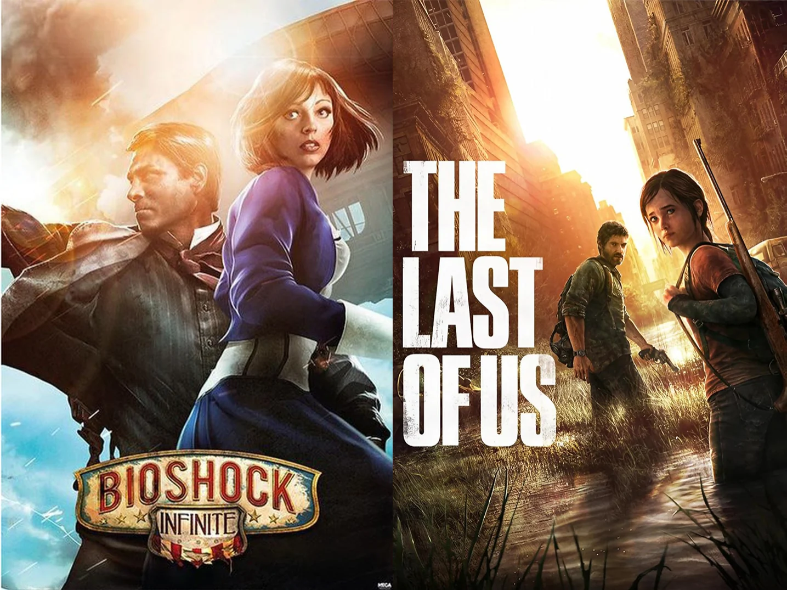
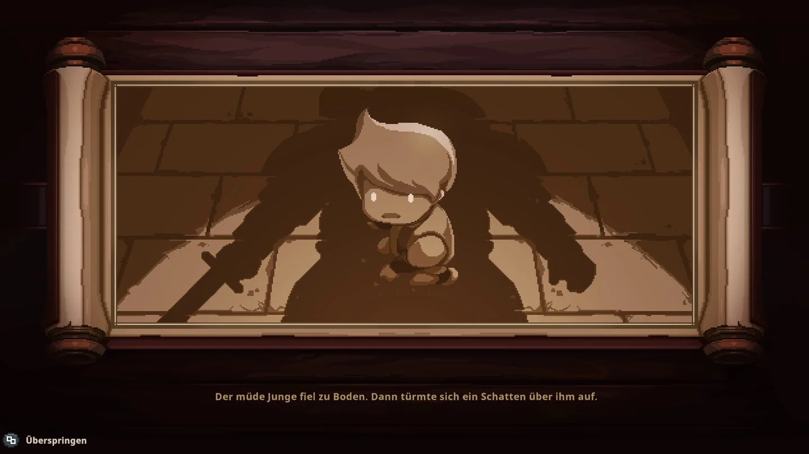
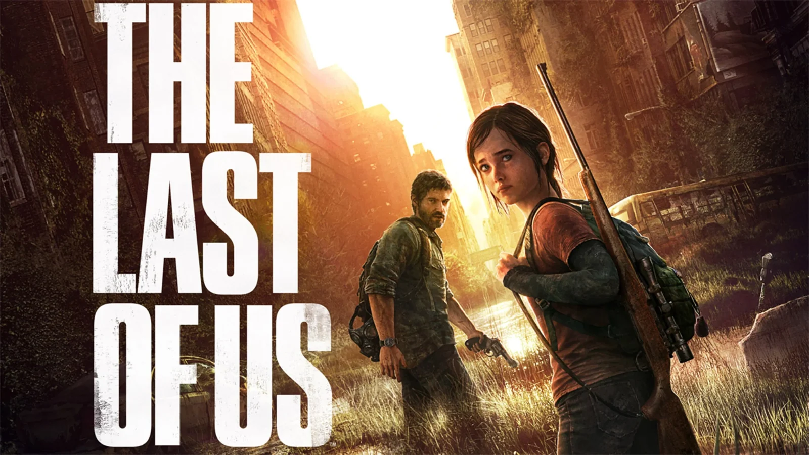
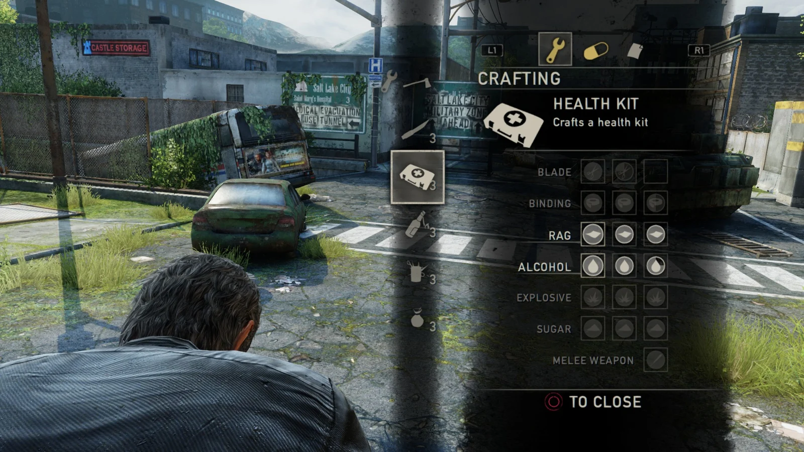
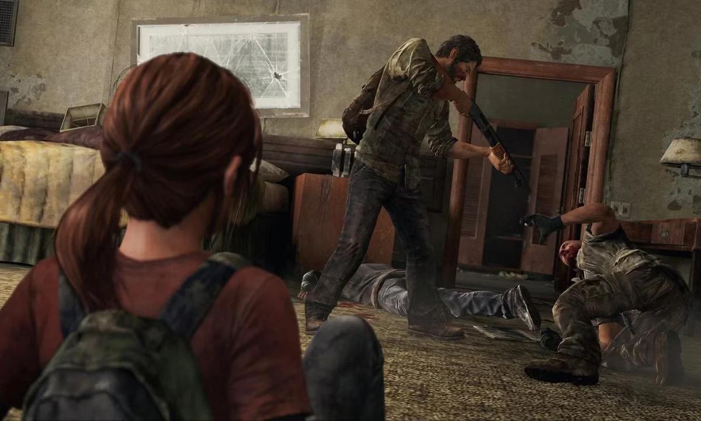
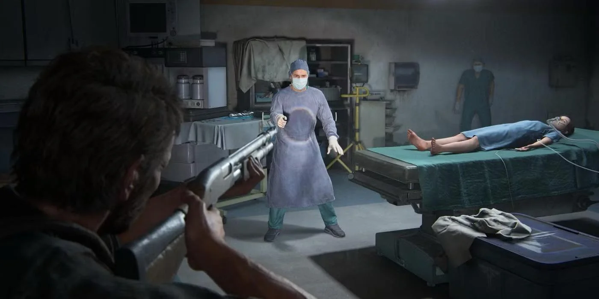
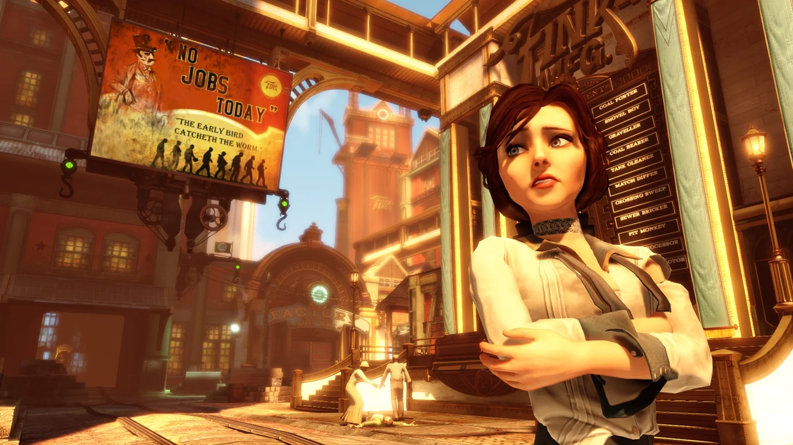
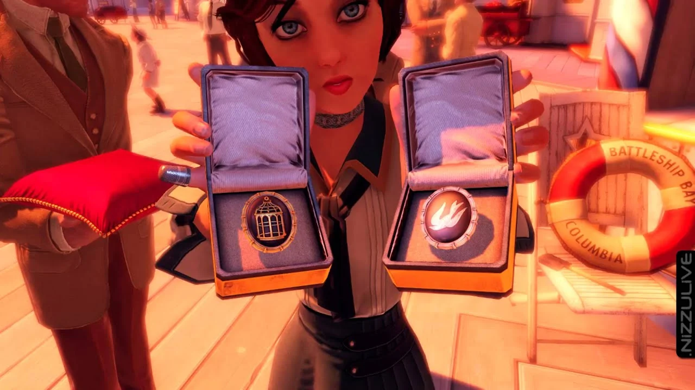
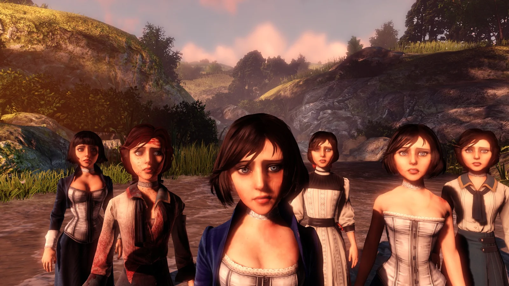
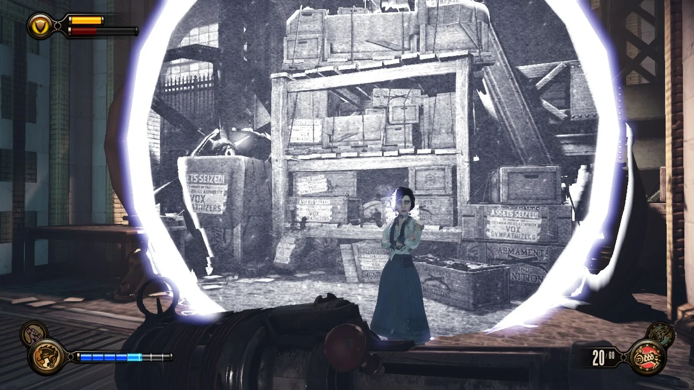

成功的叙事游戏——当玩法成为故事
文章目录

很多游戏自称“剧情驱动”，但实际上，它们的故事活在玩法之外。
情感时刻发生在过场动画里。角色成长发生在对话里。主题通过脚本事件传达。而玩法呢，充当的是一个挑战系统——玩家完成它，是为了解锁下一段叙事。
成功的叙事游戏不是这样运作的。
在最有力量的故事游戏里，玩法与叙事并不分离。机制本身就在表达角色、主题和冲突。玩家不只是目睹故事——他们在演出故事。系统的规则成了讲故事的语言。
当玩法成为故事，去掉过场动画并不会去掉情感体验。叙事的意义仍然存在于玩家移动、战斗、管理资源、做决定、栖居于世界的方式里。
这篇文章想探讨某些游戏是如何做到这种融合的——不是把叙事附着在玩法上，而是设计出本身就是叙事的机制。
一、常见的错误——故事作为装饰
许多所谓的“叙事游戏”仍然把故事当作叠在玩法之上的一层。情感节拍在过场里。角色弧光在对话序列里展开。主题通过脚本场景来解释。与此同时，玩法存在于一个独立的空间——战斗、移动、解谜、成长系统，各自独立于叙事运转。

在这些情况下，故事和玩法共存，但彼此不互动。
如果把这类游戏的过场动画去掉，玩法仍然能运转。你仍然可以射击、跳跃、升级、解谜。但情感意义会大量消失。系统本身承载不了故事的重量。
这种分离造成了一个结构性的断层。
玩法变成了玩家为了解锁叙事奖励而做的“工作”。故事变成了一层装饰，用来为机制辩护，而不是通过机制表达出来。
对设计师来说，这是一个诱人的结构。它更安全。我们可以写一个强剧本、做一个能用的系统，而不必逼它们说同一种语言。但这种分离也限制了这个媒介。它把游戏降格为夹着机制间歇的互动电影。
最有力量的叙事游戏打破了这个模式。
它们不问：“怎么把故事挂到机制上？”它们问：“怎么设计出能表达故事的机制？”
这个区别在措辞上很小——在设计含义上却是巨大的。
二、机制作为情感系统——《最后生还者》与生存的设计
《最后生还者》

如果玩法能成为故事，那么机制就必须不止制造挑战——它必须生成情感体验。
在《最后生还者》里，生存不只是一个叙事主题。它是一个机制条件。系统被设计成让生存感觉沉重、不适、道德上复杂。
稀缺作为主题
《最后生还者》里的稀缺不只是难度调校。它是情感的建筑。
- 弹药有限。
- 制作材料稀少。
- 治疗要消耗本可以用在别处的资源。
- 潜行往往比战斗更安全——但更慢、更紧张。

游戏把玩家逼进不舒服的取舍里。每个决定都有分量：我是用这个瓶子引开敌人，还是留着做东西？我冒险正面冲突，还是干脆绕开？
稀缺系统做了一件很有力量的事：它让暴力变得昂贵。
这不是英雄式的力量幻想。这是消耗战。
机制体现了这个世界的残酷。叙事不必反复告诉你生存有多残忍——系统让你感受到它。
战斗的重量与角色身份
乔尔的战斗方式不像动作英雄。
他的动作更慢。近战混乱。敌人不会干净利落地倒下。枪的后坐力沉重。扭打拖得很长。
这种机制上的“重量”表达了角色身份。
乔尔不是作为掌控力的象征来设计的。他是一个疲惫的幸存者。
如果战斗流畅又华丽，那会和故事相矛盾。相反，机制里的摩擦强化了乔尔是谁。

在这里，机制成了角色塑造。
你不只是通过对话了解乔尔——你通过约束栖居于他。
医院段落——当行动成为道德声明
结尾的医院段落常被放在“叙事选择”的框架下讨论。但让它有力量的不是过场——是行动。

玩家必须往前走。玩家必须开枪。玩家必须把艾莉抱出去。
游戏没有把这当作一个对话选项来呈现。它把这当作玩法来呈现。你不能保持中立。你不能跳过。你必须做出这个行为。这个设计选择把玩家从旁观者变成了参与者。道德上的暧昧不是你看到的东西，而是你做出的东西。而因为是你做的，情感的重量就属于你。这就是玩法完全成为故事的时刻。
在《最后生还者》里，叙事不在机制之上。它嵌在机制之内。稀缺制造情感张力。战斗的重量表达角色。强制的行动制造道德牵连。
系统不是在支撑故事。它们在讲述故事。
三、结构性机制作为叙事主题——《生化奇兵：无限》与命运的建筑
《生化奇兵：无限》

《生化奇兵：无限》通过结构性机制来表达叙事。
它的主题不是生存，而是必然性。命运。选择的幻觉。
它没有仅仅通过对话来讲这个故事，而是把它建进了结构里。
选择的幻觉
游戏早期，玩家会遇到一些小选择：
- 扔不扔那个棒球。
- 选胸针还是鸟。
- 在对话里做一些小决定。

起初这些选择看起来有意义。但随着叙事展开，游戏揭示了一个令人不安的模式：无论你怎么选，某些结果始终不变。
“总有一个人。总有一座灯塔。总有一座城市。”

游戏提供的不是分支叙事的自由，而是在演示受约束的变化。
这不是缺陷。这是主题设计。
受限选择的结构映照了决定论的主题。玩法系统悄悄强化了叙事的论点：你在往前走，但你并不真的自由。
重生与多元宇宙逻辑
在很多游戏里，死亡是一次机制上的重置。在《生化奇兵：无限》里，死亡是叙事内的。
当布克死去，玩家不是简单地读档。伊丽莎白把他拉进了现实的另一个版本。

重生机制在叙事上是被证成的。
这就是结构对齐：系统的规则就是这个宇宙的规则。
死亡没有和故事矛盾——它证实了故事。
多元宇宙的主题不只是通过说明来解释的。它通过重复、平行现实和结构性的循环被体验到。
线性设计作为哲学声明
和许多许诺自由的 RPG 不同，《生化奇兵：无限》基本是线性的。
没有大幅分叉的剧情线。没有基于玩家道德的不同结局。
分支的缺席成了论点的一部分。
游戏在问：如果你对能动性的感知，只是结构上的囚禁呢？
它没有为最大化自由而设计，而是为主题一致性而设计。
在这里，约束本身成了叙事。
在《生化奇兵：无限》里，玩法没有生成生存式的情感张力。它构建了一个结构性的隐喻。
受限的选择表达决定论。重生表达多元宇宙逻辑。线性表达哲学上的约束。
系统的架构成了主题的架构。
当结构与故事对齐，玩法就成了叙事的论证。
四、玩法成为故事的三个设计条件
从《最后生还者》和《生化奇兵：无限》里，可以归纳出玩法真正成为叙事的三个条件。
1. 机制必须强化主题
如果主题是生存，机制就必须制造脆弱与稀缺。如果主题是决定论，结构就必须限制自由。
机制不是中性的系统。它们承载情感与哲学意义。
2. 玩家的行动必须有情感重量
当玩家的行动表达出效率之外的东西时，机制就成了叙事。
在《最后生还者》里，医院里扣下扳机不只是一个战斗动作——它是一个道德行为。在《生化奇兵：无限》里，明知选择是幻觉却继续向前，强化了必然性。
当玩家对发生的事感到负有责任，玩法就转化成了讲故事。
3. 体验必须取代解释
最强的叙事设计不依赖说明。它让玩家通过交互感受主题。
当稀缺让你犹豫要不要用最后一发子弹时，你不需要一个角色来说“这个世界很残酷”。当游戏的结构否定了有意义的分叉时，你不需要一段关于命运的独白。
当系统通过体验来教学，玩法就成了叙事的语言。
结语
成功的叙事游戏不会把故事当装饰挂在机制上。它们让机制与主题对齐，让结构与哲学对齐，让玩家行动与情感后果对齐。
在这些游戏里，过场动画增强了体验——但它们不是意义的来源。意义活在规则里面。
当玩法成为故事，叙事就不再是我们看着展开的东西，而是我们演出来的东西。
对设计师来说，这个转变改变了一切。故事不是在系统建好之后才写的。故事从一开始就被建进系统里。
而当这种对齐发生时，这个媒介才达到它完整的表达潜力。